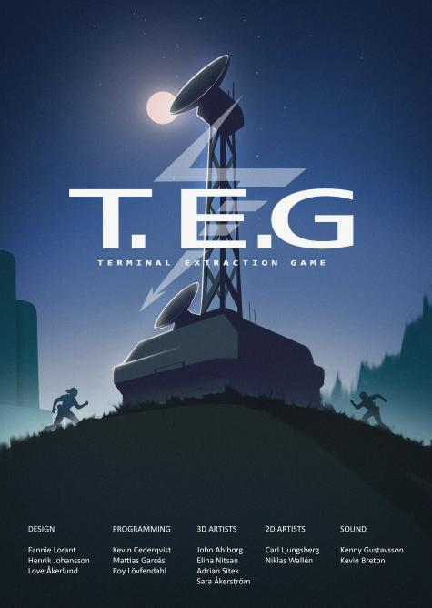

Our second project lasted for 4 weeks and it had to contain at least 2 sports. Our team was composed of 14 people. Terminal Extraction Game or T.E.G contains 2 players which can play on the same computer with either split screen or seperate screens.
The goal of the game is to collect 5 batteries spread through out the map and then return them to the Extraction tower. However, since our 2 sports were orientation and ultimate tag, obly the one who isnt "it" can collect the batteries.
the "it" person have to hunt after the collector and tag him, while the hunter keeps gaining passively increased speed. when the copllector is tag, the new "it" gets a white screen and is stunned for a 3 second duration.
In the case the tagged person dont know where the collector is, the tagged person may use a special ability which shoots up a beam in the sky that reveals where the collector is.
The collector also have an escape ability whereas the collector creates copies of him/herself that run randomly in all directions, to confuse the hunter.
Our programmers were: Matthew Garcés, Kevin Cederqvist, Roy Lövfendahl. Our 2D artists were: Carl Ljungsberg, Niklas Wallén.
Our 3D artists: John Alberg, Elina Nitsan, Adrian Sitek, Sara Åkerström.
Our Desingers: Fannie Lorant, Henrik Johansson, Love Åkerlund.
Our sound developers: Kenny Gustavsson, Kevin Breton.

In this prohect we used blueprints, because we were not experienced enough in c++. The project were made in Unreal Engine 4. We did a little bit of coding, but we cut it out, because it messed up the project.
However in the project I did play around with Movement in C++ and a Dash ability. Code for the dash ability is sadly gone with time and have been removed from my drives.
What I learn from that was to work it in to another project im currently solo on, which is for the sole purpose to learn c++.
Character Movement
// Fill out your copyright notice in the Description page of Project Settings.
#include "GameFramework/Character.h"
#include "ShooterCharacter.h"
#include "CoreMinimal.h"
#include "Gun.h"
// Sets default values
AShooterCharacter::AShooterCharacter()
{
// Set this character to call Tick() every frame. You can turn this off to improve performance if you don't need it.
PrimaryActorTick.bCanEverTick = true;
}
// Called when the game starts or when spawned
void AShooterCharacter::BeginPlay()
{
Super::BeginPlay();
GetWorld()->SpawnActor;
}
// Called every frame
void AShooterCharacter::Tick(float DeltaTime)
{
Super::Tick(DeltaTime);
}
// Called to bind functionality to input
void AShooterCharacter::SetupPlayerInputComponent(UInputComponent* PlayerInputComponent)
{
Super::SetupPlayerInputComponent(PlayerInputComponent);
PlayerInputComponent->BindAxis(TEXT("MoveForward"), this, &AShooterCharacter::MoveForward);
PlayerInputComponent->BindAxis(TEXT("MoveRight"), this, &AShooterCharacter::MoveRight);
PlayerInputComponent->BindAxis(TEXT("LookUp"), this, &APawn::AddControllerPitchInput);
PlayerInputComponent->BindAxis(TEXT("LookRight"), this, &APawn::AddControllerYawInput);
PlayerInputComponent->BindAction(TEXT("Jump"), EInputEvent::IE_Pressed, this, &ACharacter::Jump);
}
void AShooterCharacter::MoveForward(float AxisValue)
{
AddMovementInput(GetActorForwardVector() * AxisValue);
}
void AShooterCharacter::MoveRight(float AxisValue)
{
AddMovementInput(GetActorRightVector() * AxisValue);
}
/*void AShooterCharacter::LookUp(float AxisValue)
{
//Referance to AddControllerPitchInput.
AddControllerPitchInput(AxisValue);
}
void AShooterCharacter::LookRight(float AxisValue)
{
AddControllerYawInput(AxisValue);
}*/